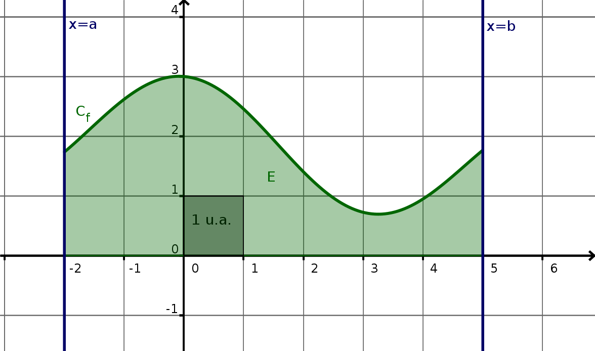
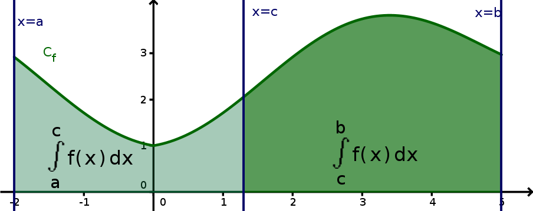
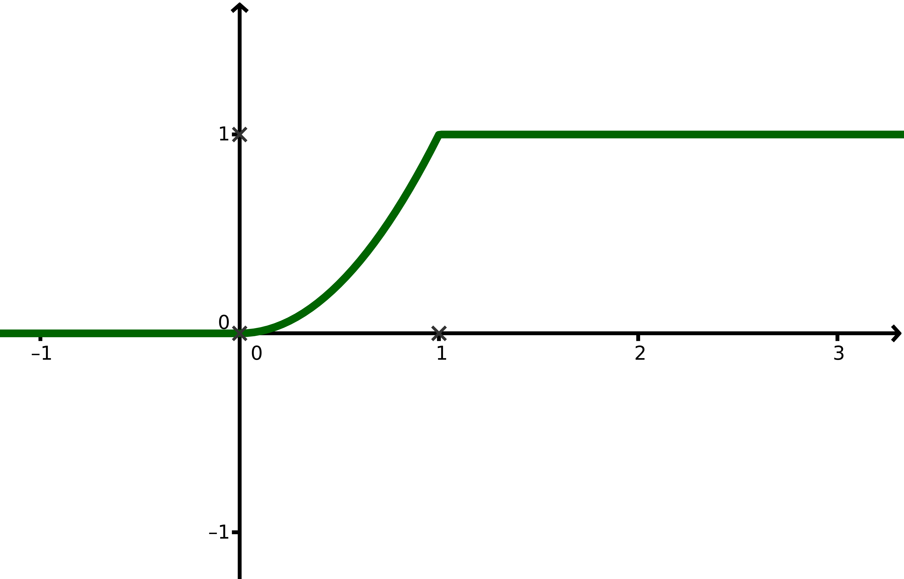
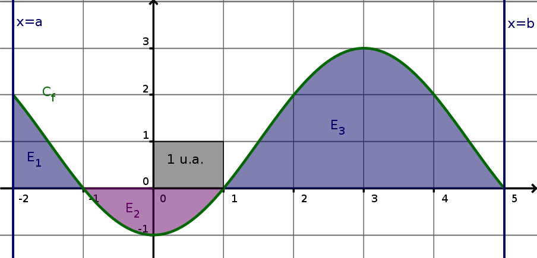
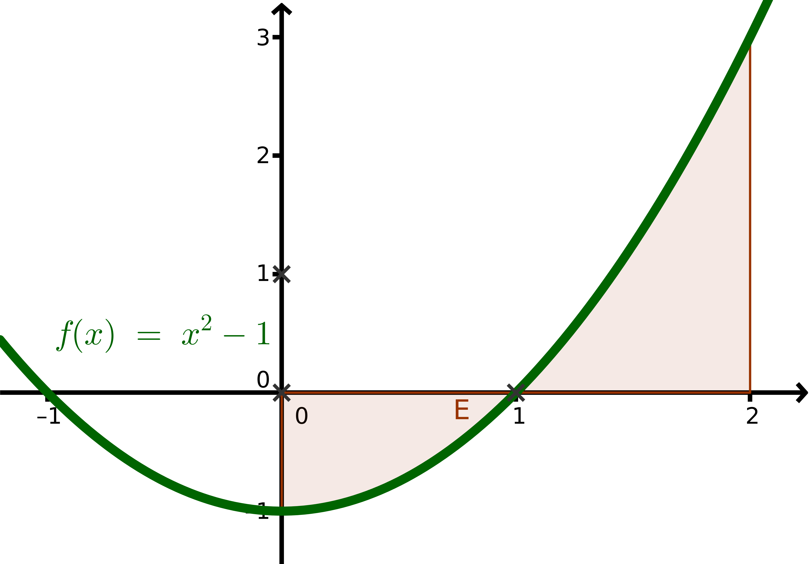
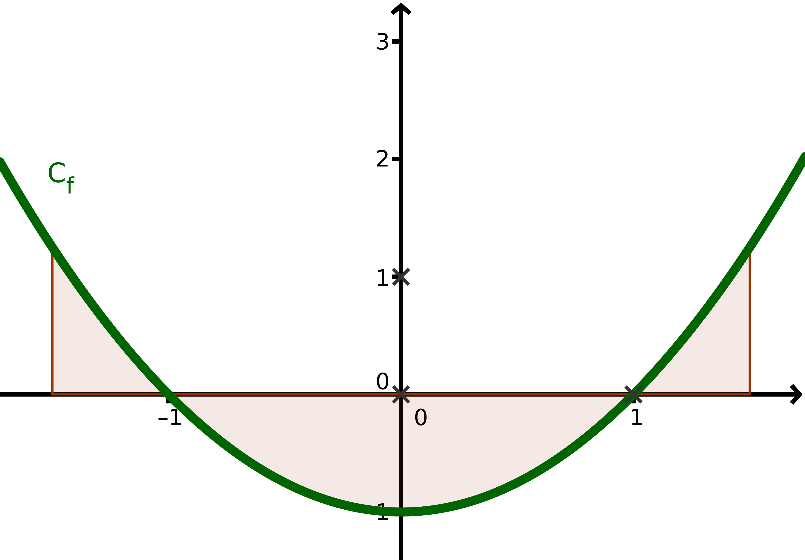
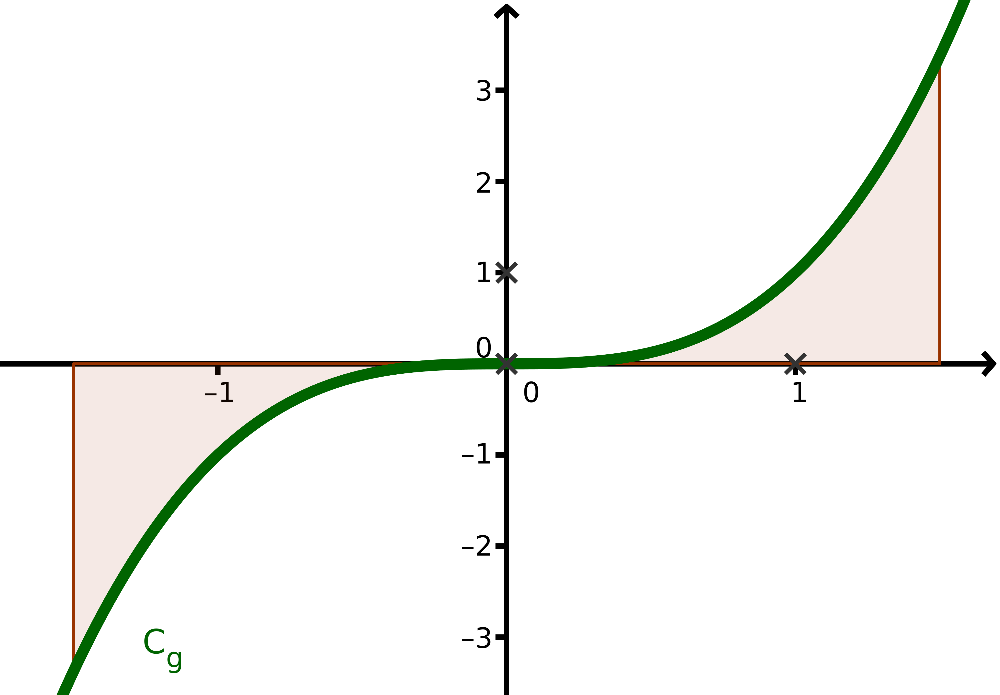
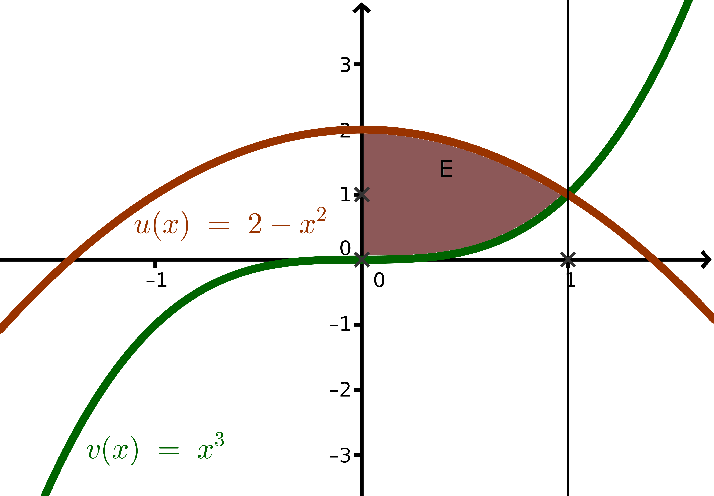
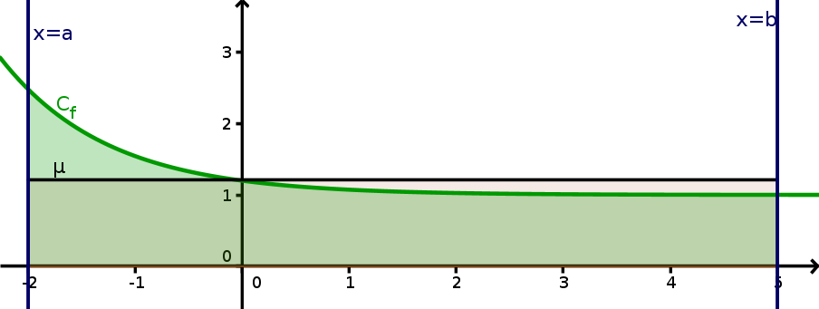

Intégrales - Cours
Introduction
L'intégrale est un outil fondamental pour les mathématiques et sciences physiques : elle permet, par exemple
les calculs d'aires délimitées par des courbes, le calcul de valeurs moyennes, les calculs de volumes,
d'énergie, etc...
Le calcul d'intégrales utilise les primitives.
Le calcul d'intégrales utilise les primitives.
Primitives
Dans toute cette partie, on se place sur un intervalle \(I\).
On dit qu'une fonction \(f\) définie sur \(I\) admet une primitive \(F\)
lorsque l'on a :
\(F'=f\)
Sur \(\mathbb{R}\), \(F(x)=\frac{1}{2}x^2\) est une primitive de \(f(x)=x\) car :
\(F'(x)=\left(\frac{1}{2}x^2\right)'=\frac{1}{2}\times 2x=x=f(x)\)
On peut observer que \(G(x)=\frac{1}{2}x^2+10\) est aussi une primitive de \(x\) puisque \(10'=0\), ce qui
nous conduit à énoncer la propriété qui suit :
Sur un même intervalle, toutes les primitives diffèrent d'une constante, c'est à dire :
- si \(k\) est une constante réelle et si \(F\) est une primitive de \(f\) sur \(I\), alors \(G=F+k\) est aussi une primitive de \(f\) sur \(I\) ;
- toutes les autres primitives de \(f\) sur \(I\) sont de la forme \(F+k\) pour une certaine contante \(k\).
- On pose \(G(x)=F(x)+k\) ; On a pour tout \(x\) dans \(I\) :
\(G'(x)=\left(F(x)+k\right)'=F'(x)+k'=f(x)+0=f(x)\), donc \(G=F+k\) est aussi une primitive de \(f\) sur \(I\). - Soit \(H\) une autre primitive de \(f\) sur \(I\). On a alors pour tout \(x\) dans \(I\),
\((H-F)'(x)=H'(x)-F'(x)=f(x)-f(x)=0\).
\(H-F\) est donc une fonction constante de valeur un réel \(k\) fixé. On a alors pour tout \(x\in I\),
\(H(x)-F(x)=k\) donc \(H(x)=F(x)+k\). Toutes les primitives de \(f\) diffèrent donc d'une constante.
Déterminer la primitive \(F\) (sur \(\mathbb{R}\)) de \(f(x)=x^2\) telle que \(F(2)=3\).
On sait qu'une primitive de \(f\) est \(H(x)=\dfrac{x^3}{3}\) ; la primitive de \(f\) qui s'annule en
\(x=2\) est donc
\(F(x)=H(x)-H(2)=\dfrac{x^3}{3}-\frac{8}{3}=\dfrac{x^3-8}{3}=\dfrac{(x-2)(x^2+2x+4)}{3}\)
Propriétés des primitives
Soit \(f\) et \(g\) deux fonctions admettant deux primitives \(F\) et \(G\) sur un intervalle \(I\), et
\(k\) une constante réelle. Alors :
- Multiplication par une constante :
\(kF\) est une primitive de \(kf\).
\(x^3\) est une primitive de \(3x^2\), donc \(\frac{1}{3}x^3\) est une primitive de \(\frac{1}{3}3x^2=x^2\). - Somme :
\(F+G\) est une primitive de \(f+g\).
\(x^3+x\) est une primitive de \(3x^2+1\)
Attention : \(FG\) n'est pas une primitive de \(fg\) et \(\dfrac{F}{G}\) n'est pas une
primitive de \(\dfrac{f}{g}\);
en effet \((FG)'=F'G+FG'=fG+Fg\neq fg\) et \(\left(\dfrac{F}{G}\right)'=
\dfrac{fG-gF}{G^2}\neq\dfrac{f}{g}\).
Contre-exemple : \(1=1\times1\) n'admet pas pour primitive \(x\times x=x^2\), car la dérivée de \(x^2\) est \(2x\) et pas 1 !
Contre-exemple : \(1=1\times1\) n'admet pas pour primitive \(x\times x=x^2\), car la dérivée de \(x^2\) est \(2x\) et pas 1 !
Pour calculer une primitive, il faut souvent développer.
Déterminer une primitive sur \(\left]0;+\infty\right[\) de :
\(f(x)=(1+2x^2)^2\) et de \(g(x)=\dfrac{x^3-1}{x^2}\)
Primitives usuelles
Primitives usuelles :
| Fonction | Primitive |
|---|---|
| \(k~~\textrm{(cte)}\) | \(kx\) |
| \(x^2\) | \(\frac{x^3}{3}\) |
| \(x^{\alpha} ~~(\alpha\neq -1)\) | \(\frac{x^{\alpha+1}}{\alpha+1}\) |
| \(\sqrt{x}\) | \(\frac{2}{3}x\sqrt{x}\) |
Primitives composées :
Si \(u\) et \(v\) sont des fonctions dérivables :
| Fonction | Primitive |
|---|---|
| \(u'u^n ~(n\in\mathbb{N}^*;u\neq0)\) | \(\frac{u^{n+1}}{n+1}\) |
| \(u'\textrm{e}^u\) | \(\textrm{e}^u\) |
| \(\dfrac{u'}{u}\) | \(\ln(u)\) |
| \(u'v\circ u\) | \(v\circ u\) |
Déterminer une primitive sur \(\mathbb{R}\) de chacune des fonctions suivantes :
- \(f(x)=3\)
- \(g(x)=3x\)
- \(h(x)=3x^2-7x+2\)
- \(i(x)=\left(3x-\dfrac{1}{x}\right)^2\)
- \(j(x)=30x(1+x^2)^{14}\)
- \(k(x)=x\textrm{e}^{-x^2}\)
- \(l(x)=(x+3)\textrm{e}^{-2x}\)
- \(\dfrac{1}{x^2-5x+6}\)
(décomposer en \(\dfrac{a}{x-3}+\dfrac{b}{x-2}\))
Notation crochet
Soit \(F\) une primitive de \(f\) définie sur un intervalle \(I\) et \(a\) et
\(b\) dans
\(I\).
Pour noter une différence entre deux valeurs d'une même primitive, on utilise cette notation, appelée «notation crochet» : \(\displaystyle\left[F(x)\right]_a^b=F(b)-F(a)\)
Pour noter une différence entre deux valeurs d'une même primitive, on utilise cette notation, appelée «notation crochet» : \(\displaystyle\left[F(x)\right]_a^b=F(b)-F(a)\)
Calculer :
- \(A=\left[x^2\right]_1^2\)
- \(B=\left[x^3-x\right]_1^2\)
Attention au signe moins qui se répercute sur tout le «bloc» \(F(a)\), il faut mettre des
parenthèses en remplaçant \(F(a)\) par son expression lorsque \(F\) est une somme !
Intégrale d'une fonction
Définition
\(f\) est une fonction admettant une primitive \(F\) sur un intervalle \(I\) et \(a,b\in I\)
sont
deux réels fixés.
On appelle intégrale de \(a\) à \(b\) de \(f\) le nombre noté :
\(\displaystyle\int_a^b\,f(x)\,\textrm{d}x~=~\left[F(x)\right]_a^b~=~F(b)-F(a)\)
Cette définition est bien indépendante de la primitive choisie : comme les primitives de \(f\) diffèrent
d'une constante, l'écart entre deux valeurs d'une primitive de \(f\) ne dépend pas du choix de cette
primitive.
Interprétation graphique :

Si \(f\) est une fonction positive sur [a;b], alors
\(\displaystyle\int_a^b\,f(x)\,\textrm{d}x\)
donne l'aire \(\mathcal{A}(E)\), en unités d'aires (notées u.a.) du domaine \(E\) délimité par la
courbe de
\(f\),
l'axe \((Ox)\) et les deux droites verticales passant par les abscisses \(a\) et \(b\).
\(E\) est l'ensemble des points \(M(x;y)\) du plan tels que
\(\left\{
\begin{array}{l}
a \leqslant x \leqslant b \\
0 \leqslant y \leqslant f(x) \\
\end{array}
\right.\).
Écrire, sous la forme d'une intégrale, l'aire \(\mathcal{A}(E)\) du domaine \(E\) indiqué sur
le graphique.
Déterminer l'aire délimitée par la parabole d'équation \(y=x^2\), l'axe
\((Ox)\) et
les
droites d'équations \(x=1\) et \(x=2\).
Propriétés de l'intégrale
Dans cette partie, \(f,g\) sont deux fonctions admettant des primitives sur \([a;b]\) et \(k\) une
constante.
Permutation des bornes
\(\displaystyle\int_b^a\,f(x)\,\textrm{d}x~=~-\int_a^b\,f(x)\,\textrm{d}x\)
Démonstration : En effet, on a : \(\int_b^af(x)\textrm{d}x=F(a)-F(b)=-(F(b)-F(a))=-\int_a^bf(x)\textrm{d}x\)
\(\displaystyle\int_b^a\,f(x)\,\textrm{d}x~=~-\int_a^b\,f(x)\,\textrm{d}x\)
Démonstration : En effet, on a : \(\int_b^af(x)\textrm{d}x=F(a)-F(b)=-(F(b)-F(a))=-\int_a^bf(x)\textrm{d}x\)
Linéarité :
\(f,g\) sont deux fonctions admettant des primitives sur \([a;b]\) et \(k\) une constante. Alors : \(\displaystyle\int_a^b\,f(x)+g(x)\,\textrm{d}x=\displaystyle\int_a^b\,f(x)\,\textrm{d}x+\displaystyle\int_a^b\,g(x)\,\textrm{d}x\) et \(\displaystyle\int_a^b\,kf(x)\,\textrm{d}x=k\displaystyle\int_a^b\,f(x)\,\textrm{d}x\)
Démonstration : hérité des propriétés sur les primitives.
\(f,g\) sont deux fonctions admettant des primitives sur \([a;b]\) et \(k\) une constante. Alors : \(\displaystyle\int_a^b\,f(x)+g(x)\,\textrm{d}x=\displaystyle\int_a^b\,f(x)\,\textrm{d}x+\displaystyle\int_a^b\,g(x)\,\textrm{d}x\) et \(\displaystyle\int_a^b\,kf(x)\,\textrm{d}x=k\displaystyle\int_a^b\,f(x)\,\textrm{d}x\)
Démonstration : hérité des propriétés sur les primitives.
Relation de Chasles :
Pour tous réels \(a,\,b,\,c\) dans \(I\) : \(\displaystyle\int_a^b\,f(x)\,\textrm{d}x=\int_a^c\,f(x)\,\textrm{d}x+\int_c^b\,f(x)\,\textrm{d}x\)
Pour tous réels \(a,\,b,\,c\) dans \(I\) : \(\displaystyle\int_a^b\,f(x)\,\textrm{d}x=\int_a^c\,f(x)\,\textrm{d}x+\int_c^b\,f(x)\,\textrm{d}x\)

Démonstration :
\(\int_a^b\,f(x)\,\textrm{d}x=F(b)-F(a)\) et
\(\int_a^c\,f(x)\,\textrm{d}x+\int_c^b\,f(x)\,\textrm{d}x=F(b)-\cancel{F(c)}+\cancel{F(c)}-F(a)\)
Ordre :
\(f,g\) sont deux fonctions admettant des primitives sur \([a;b]\). Si \(f\leqslant g\) sur \([a;b]\), alors : \(\displaystyle\int_a^b\,f(x)\,\textrm{d}x\leq\int_a^b\,g(x)\,\textrm{d}x\)
\(f,g\) sont deux fonctions admettant des primitives sur \([a;b]\). Si \(f\leqslant g\) sur \([a;b]\), alors : \(\displaystyle\int_a^b\,f(x)\,\textrm{d}x\leq\int_a^b\,g(x)\,\textrm{d}x\)
Attention : il faut bien vérifier que \(a\leqslant b\) pour avoir ce résultat (c'est ici garanti par la
notation [a;b] ; en effet, in intervalle [a;b] avec a>b est par convention vide).
Démonstration :
\(f\leqslant g\) donc \(g-f \geqslant 0\), or \(g-f\) est la dérivée de \(G-F\) qui est croissante donc
\(G(a)-F(a)\leqslant
G(b)-F(b)\), donc \(F(b)-F(a)\leqslant G(b)-G(a)\), donc
\(\int_a^b\,f(x)\,\textrm{d}x\leqslant\int_a^b\,g(x)\,\textrm{d}x\).
Conséquence :
Si \(f\geqslant 0\) sur \([a;b]\) alors \(\int_a^b\,f(x)\,\textrm{d}x\geqslant 0\) et si \(f\leqslant 0\) sur \([a;b]\) alors \(\int_a^b\,f(x)\,\textrm{d}x\leqslant 0\).
Si \(f\geqslant 0\) sur \([a;b]\) alors \(\int_a^b\,f(x)\,\textrm{d}x\geqslant 0\) et si \(f\leqslant 0\) sur \([a;b]\) alors \(\int_a^b\,f(x)\,\textrm{d}x\leqslant 0\).
Construction de primitives
Si \(f\) est une fonction admettant une primitive \(F\) sur un intervalle \(I\) si \(a\) est un
nombre dans
\(I\), et si \(b\) est une valeur donnée, alors
\(\displaystyle F_a(x)=y_0+\int_a^x\,f(t)\,\textrm{d}t\)
est l'unique primitive de \(f\) qui vaut \(y_0\) en \(a\).
Démonstration :
Soit \(F\) une primitive de \(f\) ;
\(\left[F_a(x)\right]'=\left(y_0+\left[F(x)-F(a)\right]\right)'=0+F'(x)+0=f(x)\) donc \(F_a\) est
bien
une
primitive de \(f\) ; de plus on a bien : \(F_a(b)=y_0+F(a)-F(a)=Y_0\).
Si \(G\) est une autre primitive de \(f\) sur \(I\) vérifiant \(G(a)=b\), alors on a pour tout \(x\) dans \(I\) : \(F_a(x)-G(x)=k\), où \(k\) est une constante. Comme \(F_a(a)=G(a)=b\), on a \(k=0\), donc \(G=F_a\). \(F_a\) est donc bien l'unique primitive de \(f\) qui vaut \(y_0\) en \(a\).
Si \(G\) est une autre primitive de \(f\) sur \(I\) vérifiant \(G(a)=b\), alors on a pour tout \(x\) dans \(I\) : \(F_a(x)-G(x)=k\), où \(k\) est une constante. Comme \(F_a(a)=G(a)=b\), on a \(k=0\), donc \(G=F_a\). \(F_a\) est donc bien l'unique primitive de \(f\) qui vaut \(y_0\) en \(a\).
Déterminer ainsi, sur le plus grand intervalle possible :
- la primitive \(F\) de \(f(x)=3x^3+1\) qui s'annule en \(x=4\).
- la primitive \(G\) de \(g(x)=\sqrt{x}\) qui vérifie \(G(3)=6\).
Intégrale d'une fonction définie par morceaux
Soit \(f\) une fonction définie par morceau, c'est à dire donnée par des expressions distinctes
sur
plusieurs intervalles ; supposons qu'elle admette des primitives sur chacun de ces intervalles.
Il
est
possible de calculer l'intégrale d'une telle fonction en étendant la définition de l'intégrale à
l'aide de
la relation de Chasles.
On découpe, selon le principe de la relation de Chasles, l'intégrale sur chacun des morceaux donnés dans
la définition de la fonction.
Soit \(f(x)= \begin{array}{|l} 0 \textrm{ si } x\leqslant 0 \\ x^2 \textrm{ si } 0<x\leqslant 1 \\ 1 \textrm{ si } x> 1 \\ \end{array}\)

On a :
\(\begin{eqnarray*} \int_{-1}^3\,f(x)\,\textrm{d}x &=& \int_{-1}^0\,0\,\textrm{d}x+\int_0^1\,x^2\,\textrm{d}x+\int_1^3\,1\,\textrm{d}x \\ &=&0+\left[\frac{1}{3}x^3\right]_0^1+\left[x\right]_{1}^3 \\ &=&\frac{1}{3}-0+3-1 \\ &=&2+\frac{1}{3}=\frac{7}{3}\\ \end{eqnarray*}\)
\(\begin{eqnarray*} \int_{-1}^3\,f(x)\,\textrm{d}x &=& \int_{-1}^0\,0\,\textrm{d}x+\int_0^1\,x^2\,\textrm{d}x+\int_1^3\,1\,\textrm{d}x \\ &=&0+\left[\frac{1}{3}x^3\right]_0^1+\left[x\right]_{1}^3 \\ &=&\frac{1}{3}-0+3-1 \\ &=&2+\frac{1}{3}=\frac{7}{3}\\ \end{eqnarray*}\)
La relation de Chasles, ainsi étendue, reste évidemment valide dans le cas des fonctions définies
par morceaux.
Calcul d'aires
Avec une fonction de signe variable
Si \(f\) est une fonction de signe non constant sur \([a;b]\), alors l'intégrale de \(a\) à \(b\) de la
fonction \(f\) est la somme des «aires algébriques» des domaines situés entre la courbe \(\mathcal{C}_f\),
l'axe des abscisses et les droites d'équations \(x=a\) et \(x=b\) (c'est à dire, sur les intervalles où
\(f\geq0\), l'aire entre la courbe et l'axe est comptée posivement, et si
\(f\leq0\), négativement).
\(\displaystyle\int_{-2}^{5}\,f(x)\,\textrm{d}x=\mathcal{A}(E_1)-\mathcal{A}(E_2)+\mathcal{A}(E_3)\)
Alors que si l'on veut obtenir l'aire du domaine \(E_1\cup E_2\cup E_3\), il faudra utiliser
la
relation
de Chasles et prendre l'opposé sur la partie comptée négativement par l'intégrale (sur
\([-1;1]\) dans
l'exemple donné).

Ainsi :
\(\displaystyle\mathcal{A}(E_1\cup E_2\cup
E_3)=\stackrel{f\geq0}{\int_{-2}^{-1}\,f(x)\,\textrm{d}x}-\stackrel{f\leq0}{\int_{-1}^{1}\,f(x)\,\textrm{d}x}+\stackrel{f\geq0}{\int_{1}^{5}\,f(x)\,\textrm{d}x}\)
Calculer l'aire du domaine \(E\) délimité par la courbe d'équation
\(y=x^2-1\),
l'axe
\((Ox)\) et les droites verticales d'équation \(x=0\) et \(x=2\).

Parité : Fonctions paires
Une fonction \(f\) est paire lorsqu'elle est définie sur un ensemble de définition
\(\mathcal{D}_f\) symétrique par rapport à 0 (par exemple \([-1,5;1,5]\)) et vérifie les conditions
(équivalentes) suivantes :
- pour tout \(x\in\mathcal{D}_f\), \(f(x)=f(-x)\).
- la courbe de \(f\) est symétrique par rapport à l'axe vertical \((Oy)\).

Si \(f\) est paire, alors :
a\(\displaystyle\int_{-a}^a\,f(x)\,\textrm{d}x=2\int_{0}^a\,f(x)\,\textrm{d}x\).
Parité : Fonctions impaires
Une fonction \(f\) est impaire lorsqu'elle est définie sur un ensemble de
définition
\(\mathcal{D}_f\) symétrique par rapport à 0 (par exemple \([-1,5;1,5]\)) et vérifie les
conditions
(équivalentes) suivantes :
- pour tout \(x\in\mathcal{D}_f\), \(f(x)=-f(-x)\).
- la courbe de \(f\) est symétrique par rapport au centre du repère.

Pour une fonction \(g\) impaire :
\(\displaystyle\int_{-a}^a\,g(x)\,\textrm{d}x=0\)
calculer \(\displaystyle\int_{-10}^{10}\,x^2\,\textrm{d}x\) et
\(\displaystyle\int_{-10}^{10}\,x^3\,\textrm{d}x\).
Aire délimitée par deux courbes
Soit \(f\leq g\) deux fonctions admettant des primitives sur un intervalle \(I\) et \(a\), \(b\) deux nombres dans \(I\). On note \(E\) le domaine du plan délimité par les courbes représentant \(f\) et \(g\) et les droites verticales d'équations \(x=a\) et \(x=b\).- On repère quelle est la fonction (ici \(g\)) dont la courbe est au-dessus de l'autre (ici \(f\)) ;
- on calcule l'intégrale de \(g-f\) entre \(a\) et \(b\) pour obtenir l'aire du
domaine ;
!!!!!!
Si les courbes changent de position relative, on découpe l'intervalle d'intégration.On a \(u(x)=2-x^2\) et \(v(x)=x^3\). Calculer l'aire (en u.a.) du domaine
\(E\).

Valeur moyenne
Si \(f\) est une fonction qui admet des primitives (éventuellement par
morceaux) sur
\([a;b]\), on appelle valeur moyenne de \(f\) sur \([a;b]\) le réel :
\(\displaystyle\mu=\frac{1}{b-a}\int_a^b\,f(x)\,\textrm{d}x\)
!!!!!!
Lorsque \(f\) est continue et positive sur \([a;b]\), le domaine situé sous la courbe de
\(f\)
et le
rectangle de dimensions \(b-a\) et \(\mu\) ont même aire.
Calculer la valeur moyenne de
\(f(x)=x^2\) sur \([1;3]\).
\vspace{3cm}
\(f(x)=x^2\) sur \([1;3]\).
Fonctions continues
Ce paragraphe permet de démontrer que toute fonction continue \(f\) sur \(\left[a;b\right]\) admet des primitives, et donc est intégrable.
!!!!!!
On suppose ici \(f\) croissante et positive. Pour tout \(x\in\left[a;b\right]\), on note
\(F(x)\) l'aire
du domaine situé entre la courbe de \(f\), l'axe \((Ox)\), et les droites verticales passant
par
les
abscisses \(a\) et \(x\). Alors \(F\) est une primitive de \(f\).
!!!!!!
Soit \(x_0\in[a;b]\) et \(h>0\).- Faire un schéma et repérer l'aire correspondant à la valeur \(F(x_0+h)-F(x_0)\).
- Tracer les deux rectangles de base \([x_0;x_0+h]\) et de hauteur \(f(x_0)\) et \(f(x_0+h)\).
- En déduire que \(hf(x_0)\leq F(x_0+h)-F(x_0) \leq hf(x_0+h)\).
- En déduire que \(F\) est dérivable en \(x_0\) (à droite) et que \(F'(x_0^+)=f(x_0)\).
- Recommencer avec \(h<0\) et en déduire que \(F'(x_0^-)=f(x_0)\).
- Conclure
!!!!!!
(admise) Toute fonction continue sur un intervalle \(I\) y admet des primitives.